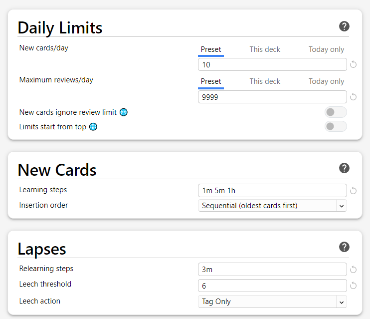
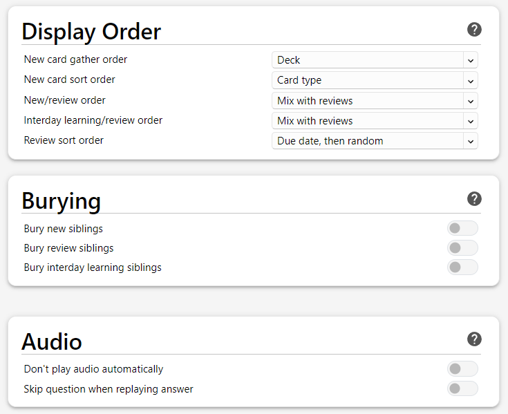
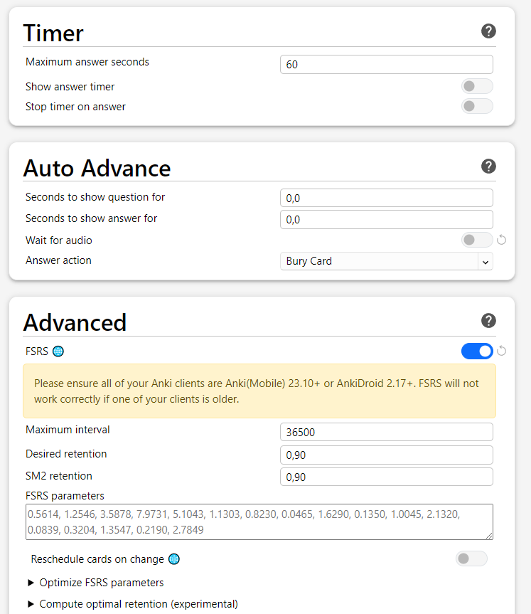

Anki Setup
I used the setup guide from xelieu - the lazy guide
And the guide from donkuri - Immersion-Based Japanese Learning.
Download Anki¶
Download Anki 32.12.1 Qt6.
Creating an account¶
You technically don't need an Anki account.
The account is only for syncing and backing up your decks and data.
Simply click on sync and Anki will check your current data with the data stored on AnkiWeb.
If you are not logged in, Anki will ask you to sign in or create a new account.
You can find your account under:
ToolsPreferencesSyncing
Setting up Anki¶
Note
If you used Anki a lot in the past and you like the v2 scheduler, you don't need to change to FSRS.
FSRS is a new algorithm for scheduling reviews. It's highly recommended to use the new scheduler
[but don't forget to do a backup of your deck, just in case].
First of all, we delete the shortcut for the hard and easy buttons.
It's best to not use the hard and easy buttons, see FSRS4Anki Q8.
"In fact, FSRS is actually more accurate for people who rarely use "Hard" and "Easy" than for people who use all 4 buttons a lot"
If you don't use FSRS, it's still better to not use the hard and easy buttons, because you could end up in the so-called Ease Hell.
Go to:
ToolsPreferencesReview- Delete
Answer keysforHardandEasy - Set
Learn ahead limitto60mins
Click on the ⚙ next to a deck
- click on
option - scroll to the bottom and enable
FSRS - apply the following options from the pictures
  
Change settings to your liking¶
Note
Your Learn ahead limit: The learn ahead limit should be larger than your largest step.
You could simply set it to 900 minutes.
If you are writing Kanji down while reviewing,
you should adjust some parameters.
This depends on how long you need to write down the kanji
and then reviewing it:
Learning steps: e.g., 2m 5m 1hMaximum answer seconds: e.g., 120
You may also change the display order:
New/review orderInterday learning/review order
Anki Add-ons¶
Installing Add-ons¶
Go to:
ToolsAdd-onsGet Add-ons...- Paste the number of the Add-on
After installing the Add-ons, you need to restart Anki.
The same goes for changing settings for Add-ons.
You need to restart Anki for settings to take effect.
Why do I need Add-ons?¶
If you want to mine vocabularies, it takes a good amount of time to create a new card.
You would need to configure a note type for Anki, defining fields, and the font and back template, and the style for the note type.
After that, you can add cards to your deck, but you need to do this manually.
With add-ons, you can automate the process of adding a new card to Anki.
Note
If you plan to use AJT Mortician, please read the description for AJT Mortician on the add-on page.
You don't need to install the Local Audio Server for Yomichan.
It only speeds up the process of getting the audio for a word.
Highly recommended:
AJT Japanese Number: 1344485230
AJT Mortician Number: 1255924302
AnkiConnect Number: 2055492159
Yomichan Forvo Server Number: 580654285
FSRS4Anki Helper Number: 759844606
Recommended:
Review Heatmap Number: 1771074083
Local Audio Server for Yomichan Number: 1045800357
Generate Batch Audio Number: 1156270186
Batch Editing Number: 291119185
Optional:
More Overview Stats 2.1 Number: 738807903
Pass/Fail Number: 876946123
Progress Graphs and Stats Number: 266436365
Study Time Stats Number: 1247171202
After this, you can download some Anki decks.